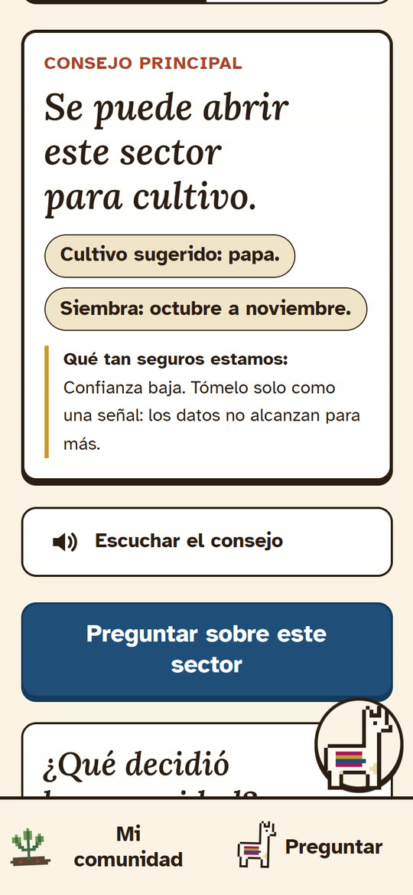
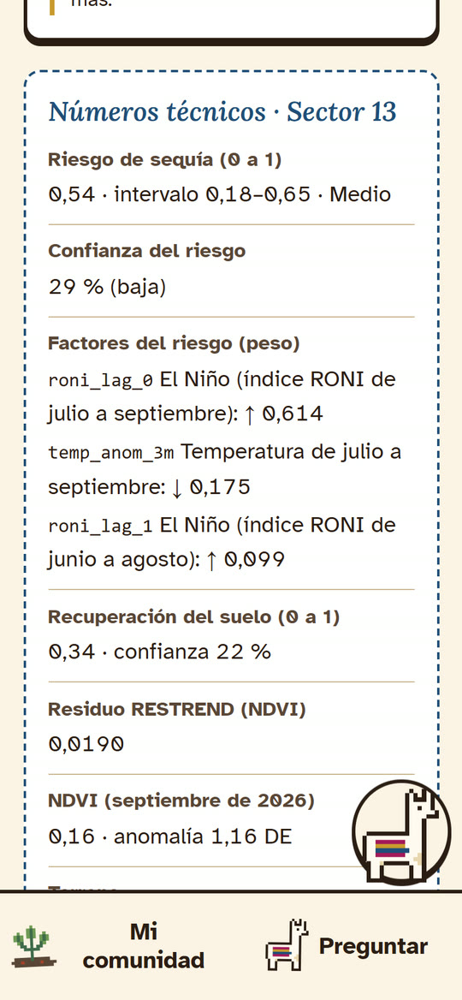

Índice RONI de NOAA, agosto a octubre de 2026.
Con El Niño aumenta la probabilidad de sequía en el altiplano.
Con El Niño aumenta la probabilidad de sequía.
Se elige de forma empírica. Con el cambio climático, la experiencia falla.
Poca señal y pocos celulares.
Lluvia, temperatura, humedad del suelo, verdor (NDVI) y terreno.
La lluvia y la temperatura son iguales para toda la zona. Lo que distingue a cada sector es su verdor (NDVI) y su terreno.

Se pregunta como a una persona
Gemini elige una herramienta (tool calling)
Los números salen solo de nuestros datos, con su confianza. Así evitamos alucinaciones.
Sin señal responde con los datos guardados en el celular.
8 zonas del altiplano 26 campañas desde 2000
Error de la predicción (RMSE). Más corto es mejor.
Por eso cada consejo muestra su confianza. Hoy es baja en los 13 sectores.
El modelo aprende de zonas parecidas, sin latitud ni longitud. Por eso puede servir a otras comunidades del altiplano.
Hoy se entrena con 8 zonas del altiplano.
Trazar los límites reales de los sectores con cada comunidad
Sumar sensores de humedad en el campo
Más temporadas para subir la confianza
Llegar a más comunidades con municipios y ONG

Real: lluvia, temperatura, humedad del suelo, verdor (NDVI), terreno y el índice RONI.
Simulado: los límites de los sectores, los años de descanso y los sensores. La app lo indica en pantalla.
Sector 13: riesgo de sequía 0,54 (intervalo 0,18 a 0,65), confianza 29 %. El factor con más peso es El Niño.